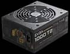
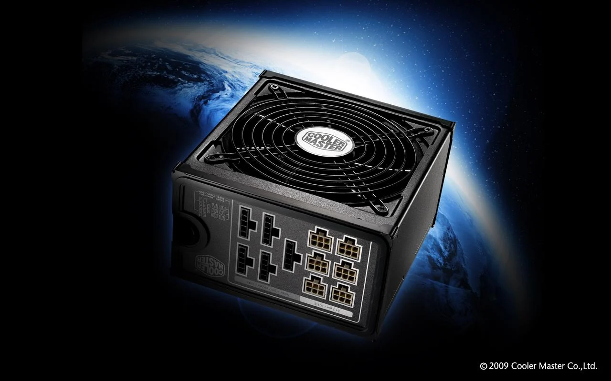

A power supply is a hardware component that supplies power to an electrical device. It receives power from an electrical outlet and converts the current from AC (alternating current) to DC (direct current), which is what the computer requires. It also regulates the voltage to an adequate amount, which allows the computer to run smoothly without overheating. The power supply an integral part of any computer and must function correctly for the rest of the components to work.
| Function 1 | Step voltages up or step voltages down , by transformer action, to the required AC line voltage. |
|---|---|
| Function 2 | Provide some method of voltage division to meet equipment needs. |
| Function 3 | Change AC voltage to pulsating DC voltage by either half-wave or full-wave rectification. |
| Function 4 | Filter pulsating DC voltage to a pure DC steady voltage for equipment use. |
| Function 5 | Regulate power supply output in proportion to the applied load. |
If you want to know more about the functions and the Power Subblies in general ,Go To This Site
